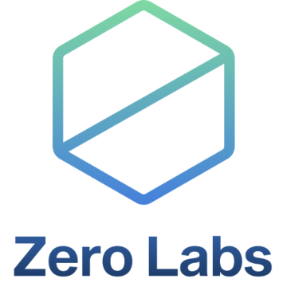

The Merge: A Schelling Point for Climate Action
Ethereum’s upcoming Merge to Proof-of-Stake (PoS) will drastically (~99.95%) reduce the environmental impact of the premier smart contract platform and second largest blockchain by market cap.
In line with the mitigation hierarchy recommended in the Science-Based Targets Standard, the Ethereum community has rightly prioritized the move to PoS to first reduce the environmental impact associated with the operations of the network.

However, reducing emissions is just the first (albeit most urgent) step: once the Merge is complete, there will still be residual emissions associated with operating validators and off-chain infrastructure like Etherscan, as well as a massive “debt” of historical emissions already up in the atmosphere contributing to the climate crisis.
Ethereum has an opportunity to flip the script that says, “blockchain is bad for the environment,” by taking action to mitigate the historical emissions of PoW. Leveraging existing market-based mechanisms for mitigating environmental impact, such as the Voluntary Carbon Market and Renewable Energy Certificates, the Ethereum community should adopt an all-of-the-above approach, as demanded by the urgency of the climate crisis.
By coming together as a broad coalition of Ethereans, we aim to direct capital toward a diversified climate-positive strategy, demonstrating the power of public blockchains to catalyze positive impact:
- Retire existing carbon credits, which supports sustainability projects that have verifiably avoided emissions with technology (e.g. energy efficiency improvemnets) or natural systems (e.g. protecting existing forests)
- Fund future carbon project development.
- Consider the use of Renewable Energy Certificates (RECs) to compensate for recent energy usage, which support the profitability of renewable energy installations.
Wait, Aren’t Carbon Credits Just for Greenwashing?
You may have seen a certain late night comedian’s recent segment on carbon credits, which calls into question the entire premise of the voluntary carbon market. For a full response, see the thoughtful posts from the leading carbon credit registry Verra or this thought leader in the space.
While there are some legitimate criticisms levied at carbon markets in the mainstream media, many of them reflect an out-dated view of where the carbon markets were a decade ago, and some of the remaining issues can actually be alleviated by integrating blockchain technology into the process of verifying, issuing, trading and retiring carbon credits.
All pathways that limit global warming to 1.5°C with limited or no overshoot project the use of carbon dioxide removal (CDR) on the order of 100–1000 GtCO2 over the 21st century. CDR would be used to compensate for residual emissions and, in most cases, achieve net negative emissions [..] Significant near-term emissions reductions and measures to lower energy and land demand can limit CDR deployment to a few hundred GtCO2 [..] (high confidence) – Section C.3, UN IPCC Summary for Policymakers
Barring globally coordinated government action, the voluntary carbon markets are the best mechanism we as members of the public have available for supporting mitigation and removal of historical emissions. While there are problems to be solved to ensure integrity and scalability, given the urgency of the climate crisis, we must take an all-of-the-above approach and avoid letting the perfect become the enemy of the good.
Confused by terms like “retirement” and “issuance”? See this glossary.
Need for Accurate Emissions Estimates
According to Kyle McDonald’s bottom-up analysis of Ethereum’s energy consumption and the corresponding carbon emissions, the Ethereum blockchain is responsible for approximately 18 million tonnes of carbon dioxide equivalent emissions.
Other estimates using more generic methodologies place the total closer to 40 million tonnes - more work has to be done comparing the existing analyses and potentially contracting a consulting firm to arrive at a final, confident emissions figure for Ethereum PoW from Genesis to Merge.
However, just based on the existing estimates, the order of magnitude is 10-100 million tonnes, which gives us plenty of room to get the ball rolling while a high-confidence, precise emissions estimate is established.
Attributing Emissions and Spurring Action
How can we inspire the organizations and communities that are responsible for the historical emissions to contribute to this initiative?
On one hand, it’s not necessarily the smart contract developers themselves responsible for the emissions - the users submitting transactions that utilize that contract are generating the demand for blockspace. On the other hand, miners have been the primary beneficiaries of demand for blockspace, so there is also a role for miners and mining pools to play in compensating for historical emissions.
Many of the leading protocols, as well as off-chain companies and organizations, have substantial amounts of capital that could be leveraged toward this initiative, if it’s framed and structured properly.
Start Where You Are
There is a clear need to create a unified portal for tracking progress on this initiative, as well as a standard operating procedure for entities who wish to contribute to the offsetting of Ethereum’s historical emissions.
This initiative is intended to be a “Big Tent” where we integrate carbon credits and other environmental assets from a variety of sources into a comprehensive climate-positive strategy for Ethereum, supporting multiple credit types from a variety of registries and sourced from multiple providers.
But we can’t wait for a perfect solution - Merge4Climate is the first step in a long journey toward making Ethereum a leader in sustainable blockchain technology.
To provide a rallying point for this initiative, ETH 4 is building a visual “progress bar” showing the contributions made by organizations and individuals, integrating a variety of on-chain credit retirement options, plus incorporating forward funding commitments preallocated for this initiative, as well as off-chain retirements that are properly attributed.
Supporting Organizations
 |
 |
|  |  |